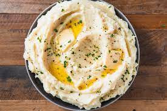

Mashed Potatoes

Description
The ultimate comfort food! Warm your belly and your heart with a big bowl of creamy homemade mashed potatoes.
Don't worry, its not hard at all! Here are a few simple steps to get you started.
4-6 servings
Ingredients
- 6 Russet potatoes
- 1 teaspoon salt
- 2 tablespoon butter
- 1 cup milk or cream
Steps
- Cut potatoes into equal pieces.
- Boil in salted water - this will season the potatoes all the way through - until very soft. It should crumble when jabbed with a fork.
- Drain, return into pot and mash with butter and milk or cream.
- Mash until creamy and fluffy.
- Transfer to serving bowl and drizzle with butter.